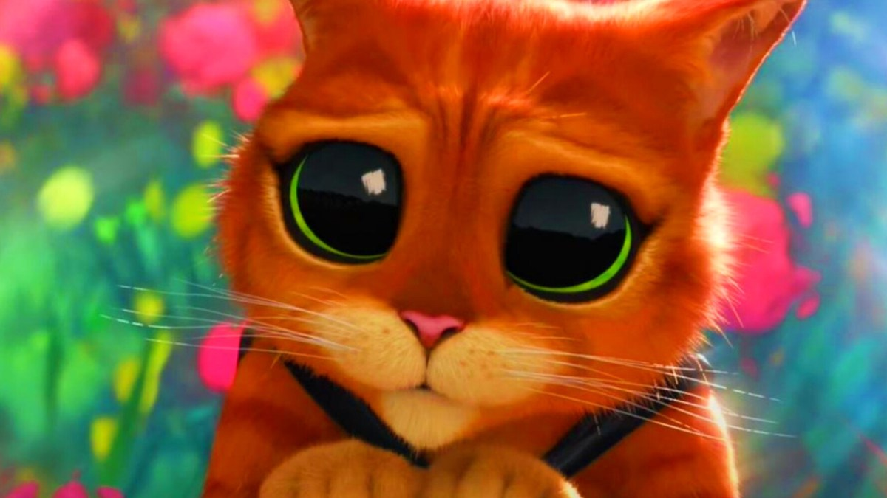

En plus de Shrek 5, Le Chat potté revient aussi pour un nouveau film

🔥 Top produits tech du moment
Publicité — Liens de partenariat Amazon : une commission peut être reversée, sans surcoût pour vous.
L'actualité tech ne cesse d'évoluer. Nouveaux produits, acquisitions, découvertes : chaque jour apporte son lot d'informations importantes pour comprendre le monde numérique de demain.
Ce qu'il faut retenir
Alors que les fans d'animation trépignent déjà d'impatience à l'idée de retrouver le célèbre ogre vert sur grand écran avec Shrek 5, DreamWorks prépare une autre surprise de taille dans l'ombre.
Le félin le plus téméraire du cinéma s'apprête lui aussi à reprendre du service pour un troisième opus solo.
Pourquoi c'est important
Cette information pourrait avoir des répercussions sur tout le secteur technologique. Elle concerne directement les utilisateurs de technologies numériques et mérite d'être suivie de près dans les prochaines semaines. En plus de Shrek 5, Le Chat potté revient aussi pour un nouveau film est ainsi un signal à prendre en compte pour comprendre les évolutions du secteur.
En résumé
Retenez l'essentiel : En plus de Shrek 5, Le Chat potté revient aussi pour un nouveau film. Cette actualité a été rapportée par Numerama. Nous continuerons de suivre ce sujet et de vous tenir informés des prochaines évolutions.
Source : Numerama